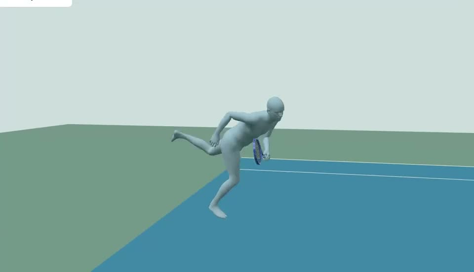

Video to Motion
Tennis video to 3D motion, rackets, bodies, scenes and films. What each generator actually produced, with every model interactive.
Where it stands
Judged on the viewing result, not a measured match.
 Body motionFlowHMR · 82% tracking success on Wild-4K in its paper
Body motionFlowHMR · 82% tracking success on Wild-4K in its paper8/10 Ballfound in frame, estimated arcs · not spin or 3D flight
Ballfound in frame, estimated arcs · not spin or 3D flight8/10 Racket modeltraced outline, woven strings, drilled grommets
Racket modeltraced outline, woven strings, drilled grommets7/10 Racket motionRacketVision sees it in 32–40% of frames at 30 fps, 81% at 120
Racket motionRacketVision sees it in 32–40% of frames at 30 fps, 81% at 1206/10 Skin and face, Meshyoutfit and surface yes · heads and hands no
Skin and face, Meshyoutfit and surface yes · heads and hands no5/10
Body shape of the personeveryone shares the FlowHMR body2/10- Skin and face, FlowHMRplain grey body
2/10  Face likenessRodin, UP2You and Meshy all generate a face, none is the person
Face likenessRodin, UP2You and Meshy all generate a face, none is the person2/10 Gold standardHawk-Eye SkeleTRACK · 29 body points, 7 racket points, stadium cameras
Gold standardHawk-Eye SkeleTRACK · 29 body points, 7 racket points, stadium camerasref
Video to motion
One camera, one point, a body that moves like the player.
- 1Pick a clipcourt-level footage, player large in frame, one point
yt-dlp - 2Bodyjoints, shape and camera per frame
FlowHMR · Modal - 3Racket pointsfive keypoints where visible
RacketVision · Modal - 4Racket through the armforearm and wrist inside limits, spin capped
Python - 5Contact rulelabel contact and shot, pin the face angle
by eye - 6Renderfour-up video and GLB
Blender
about $0.35 of Modal per clip · open weights
The rear-court library
Sixteen points, six players, one recipe. The eight distinct ones; the rest look the same.
Other cameras and frame rates
Same FlowHMR, different footage. This is where quality changes.
The racket
A model, a detector, and a solver that moves it through the arm.

Bodies from photos
Three frames of the player's own video to Rodin 2.5 through fal.ai, bound to the motion.
- Eight bodies built, all paused: wrinkles, bent spine, changed height
paused - UP2You and MICA face fits rejected
rejected
Scenes and cast
Venues are data, not generated images: OpenStreetMap, USGS terrain, an aerial photo, Poly Haven props. Meshy made the people.


the Meshy cast · photo → A-pose still → image-to-3D → rig
The goat, the ibex and the mountain
The home-page intro animal and wallpaper.

Films and thumbnails
HyperFrames renders HTML to video frame by frame in headless Chrome.

Tried and dropped
- Kling 3.0 motion-control video failed the anatomy gate
fal.ai - GEM-X and Kimodo mocap loops, none adopted
Modal - Meshy heads on the serve body: detached
Meshy - Rodin granite crag: a marble column
fal.ai - nano-banana backdrops: greenscreen
fal.ai
Timeline
- First tennis figure: Meshy 6 Lite from a generated reference image
done - Meshy characters, crowds and props for court stories and the track-sprint demo; Kling motion-control video fails
done - GEM-X and Kimodo mocap tried and dropped; first FlowHMR run; Shelton serve accepted
done - Longer rallies, two-player point, Djokovic body shape
done - Broadcast and college benchmarks; Meshy heads rejected; detailed rackets traced from manufacturer photos
done - Rodin bodies through fal.ai; Djokovic 4K crop; UP2You and MICA face tests rejected
done - 16-point rear-court library; racket solved through the arm; 120 fps forehand; face angle fixed at 34 contacts; Rodin bodies paused
done - 16-point library and the audit; USTA opener rebuilt on the serve-and-volley point
done - Serve kept behind the baseline; goat intro on the home page only; deployed
live
next · 120 fps footage only · racket silhouette in the lag phase · a hand model · ground truth under 5 px · a body and face that are the person